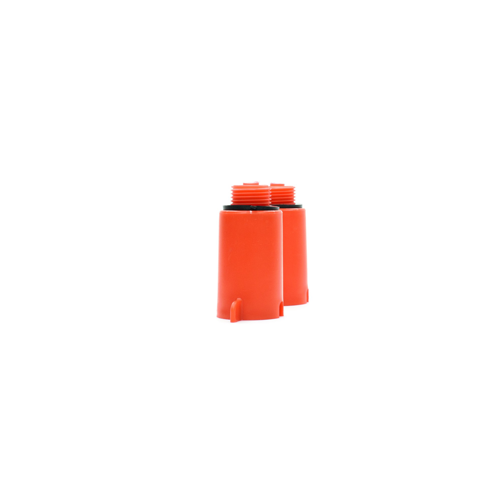

Panel Eurotop
Prizat e provës së rrjedhjeve përdoren për mbylljen e tubave të sistemit të ujit në strukturat e ndërtesave gjatë kryerjes së testeve të rrjedhjeve të sistemit të ujit. Prizat janë të disponueshme në madhësi diametri: 1/2" dhe 3/4" dhe në dy variante ngjyrash: e kuqe dhe blu.
Materiali:Polipropileni